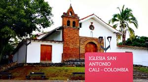

A famous sculpture park featuring the iconic "Cat of the River" and other artistic pieces along the Cali River. A great spot for art lovers.

Cali, known as the "Salsa Capital of the World," is a vibrant city full of rhythm, energy, and culture. Located in the Valle del Cauca region, Cali is famous for its lively nightlife, warm climate, and stunning views of the Andes.
Whether you're dancing the night away in salsa clubs, exploring historic landmarks, or enjoying delicious local cuisine, Cali offers a unique blend of tradition and modernity.
This city boasts many amazing spots such as:
Cristo Rey
A monumental statue of Christ overlooking the city, offering panoramic views and a peaceful atmosphere. Perfect for sightseeing and photography.
San Antonio
A historic neighborhood known for its colonial-style houses, artisan shops, and vibrant street art. Ideal for walking tours and cultural exploration.

El Gato del Río
A famous sculpture park featuring the iconic "Cat of the River" and other artistic pieces along the Cali River. A great spot for art lovers.